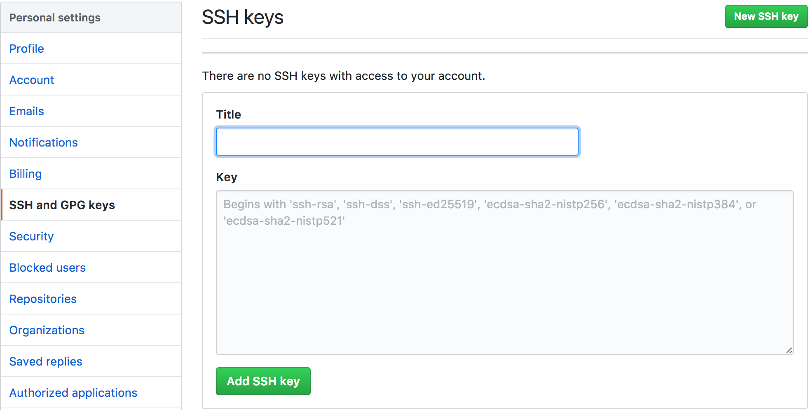
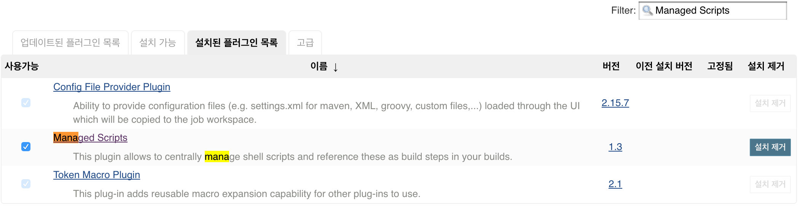
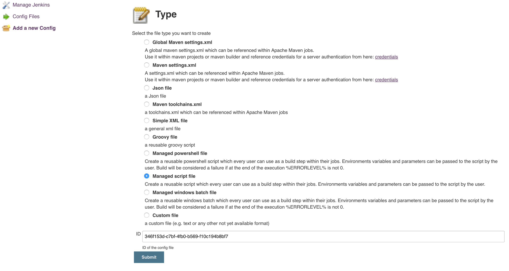
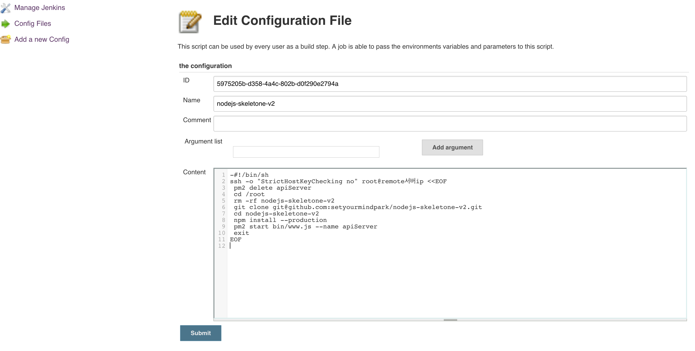
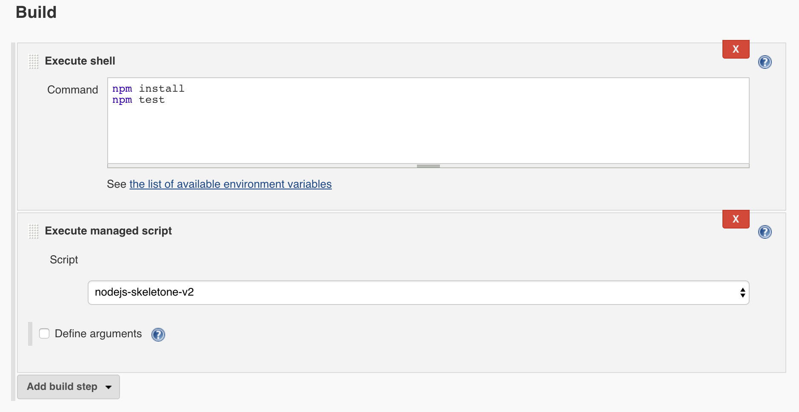
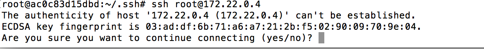
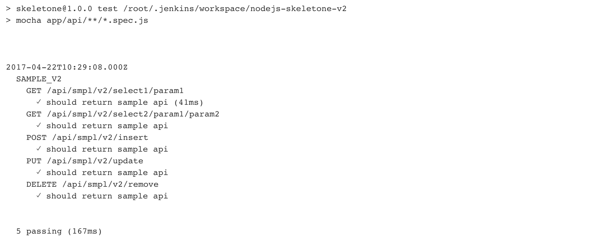
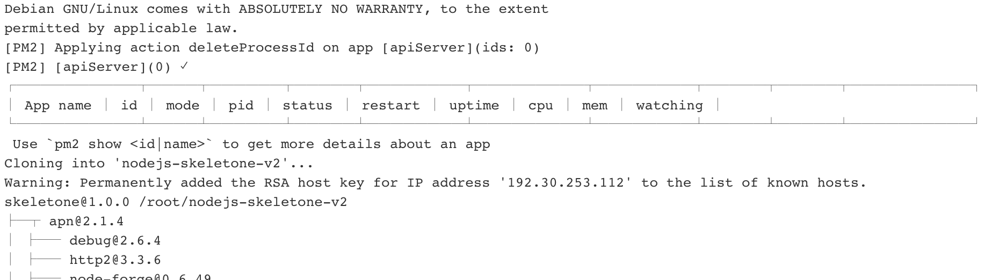
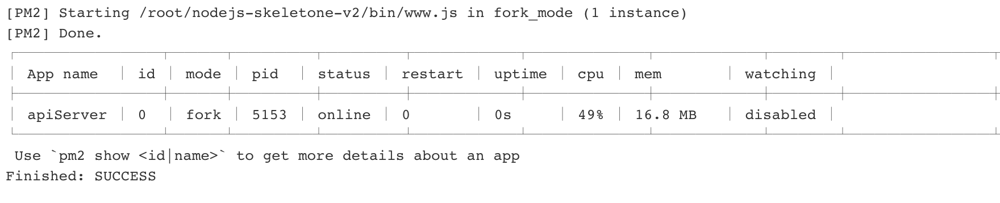
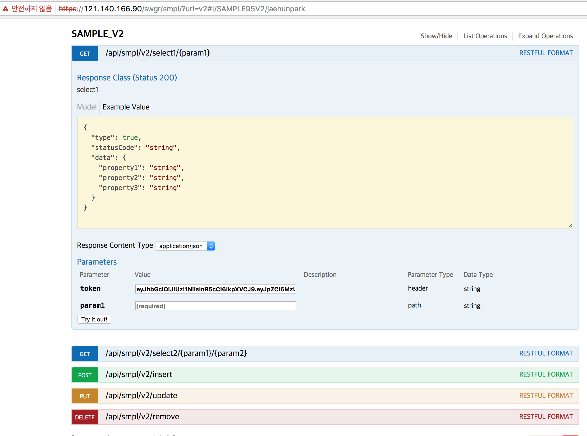

jenkins로 배포하기 - nodejs-1
jenkins로 nodejs 서버 배포하기 - 1
이전에 포스트한 jenkins로 배포하기 - java 를 통해 java기반의 서버를 jenkins를 활용하여 remote 서버로 배포하는 법을 알아보았다.
이번에는 jenkins를 활용해서 nodejs 서버를 remote 서버로 어떻게 배포하는지 알아보자.
무엇이다른가
jenkins로 배포하기 - java java 기반의 서버를 배포하는 방법을 살펴보면, git push hook event를 받아 jenkins가 maven build후 정의된 tomcat 인증정보로 war를 redeploy하는 방식이었다.
그럼 nodejs 기반의 서버는 tomcat과 같은 was가 존재하지않으므로 어떻게 remote 서버로 배포를할까 ?
필자는 nodejs기반의 서버를 jenkins를 활용하여 remote server에 ssh 접속후 job을 수행하는 방식을 사용하였다.
기본적인 remote 서버에 배포하는 일은 jenkins가 수행하므로 개념적으로는 다르지않으나, 어떻게 배포하는가에 대한 방법이 조금 다르며, 필자가 시도한 배포 방법에는 2가지가 있으므로 그중 첫번째 방법에대해서 글을 써보려 한다.
쉘 스크립트 EOF 와 git clone
jenkins 프로젝트 기본 설정은 앞서 포스트한 jenkins로 배포하기 - java 와 다르지않으니 참고 하도록하며, [ Build ] 설정 부터 수행해야할 job 이 다르니 사전에 jenkins와 git 연동을 마친상태에서 추가적인 설정정보를 진행한다.
사전준비
jenkins rsa public key(id_rsa.pub)
remote server rsa private key(id_rsa) 와 publick key(id_rsa.pub)
jenkins Managed Script plugin
먼저 jenkins에서 remote 서버를 known_hosts 등록한다.
다음으로 remote 서버에 접속후 rsa 키를 생성한다.
|
|
private key(id_rsa)와 public key(id_rsa.pub) 키가 생성되었을것이다.
remote 서버도 jenkins 로부터 git clone 명령어를 입력받을 예정이기에, github에 public key를 등록한다.

github -> Settings -> SSH and GPG Keys
rsa_id.pub 값 등록후 Add SSH Key
jenkins에서 현재접속중인 remote 서버에 인증된 client로 접속할것이기에 jenkins container에 사전에 생성된 public key(id_rsa.pub) 키를 remote 서버에 등록한다.
jenkins 컨테이너에서 생성된 public key(id_rsa.pub) 내용를 입력한다.
다음으로 github을 known_hosts로 등록을 진행한다.
jenkins에서 이러한 설정을 바탕으로 쉘스크립트 EOF로 remote 서버를 control 할것이기때문에 Managed Script plugin을 설치한다
jenkins관리 -> 플러그인관리

[ Managed Script plugin ]
jenkins관리 -> Managed files -> Add a new Config -> Managed script file


- jenkins가 remote 서버 접속후 기존에 돌고있는 nodejs 서버를 종료한다.(필자는 pm2 를 사용한다)
- /root 경로이동
- 기존의 서비스중인 nodejs 서버를 삭제한다
- git clone을 다시받는다.
- clone받은 디렉토리로 이동한다
- remote 서버는 jenkins에서 진행한 test를 다시 진행할 필요가없으므로 –production 옵션으로 node 패키지를 설치한다
- nodejs 서버를 시작한다 .
이제 마지막으로 jenkins 설정을한다. 필자는 다음과같이 설정하였다.
git push event hook을 받은 jenkins는 node 패키지 모듈을 설치한후.
이전포스트 mocha supertest should 테스트를 진행할것이므로 Execute shell에 정의하고 Execute managed script에는 방금 Managed script 에 등록된 쉘 스크립트를 선택하였다.
[ Build ]

이렇게 모든 설정이 끝이났다. 이제 배포를 시작해보자.
추가설명
jenkins의 rsa public key를 remote서버의 authorized_keys에 추가하는 과정은, 일반적으로 ssh 접속시 접속 서버의 계정 비밀번호를 반드시 입력해야 하며 root 계정으로 접속시에는 추가적으로 root계정 ssh 접속을 위한 설정이 필요하다.
하지만 방금진행한 rsa 암호화 통신은 rsa private key와 public key를 통해 인증된 ssh client를 등록하는 과정이기에 비밀번호를 입력할 필요가없어지게된다.
다음으로 jenkins에서는 remote서버를, remote서버에서는 github을 known_hosts에 등록하는 과정은, ssh 를기반으로하는 최초 git clone이나, ssh 접속시 접속하는 호스트에대한 기록이 없으므로 접속여부에대한 메시지가 발생한다.
만약 사전에 known_hosts에 등록하지않을시에는

다음과 같은 메시지를 보게될것이다. jenkins가 배포를 수행하는도중 이런 메시지를 보게된다면 곤란하므로, 사전에 등록해주는 과정이다.
배포
git commit 그리고 push
jenkins 가 다음과같이 수행한다

npm test 수행

pm2 delete apiServer
git clone
npm install –production

pm2 start bin/www.js –name apiServer

참고
필자는 jenkins에서 mocha framework를 사용해 npm test 를 진행하였다.
nodejs 서버를 배포하는 서버도 docker container로 구성이되어있고, 배포서버의 db 접속정보는 시스템 환경변수를 참조하여 정보를 get 하도록 설정하였다.
하지만 jenkins는 배포서버가 서비스하기위해 사용하는 db 접속정보를 알지못하므로, npm test 를수행할수없게된다.
필자는 그래서 jenkins container에 배포서버가 접속하는 db 접속정보의 환경변수를 공유하도록하였다.
docker-compose.yml의 설정은 다음과같다
server-node의 service가 env_file을 두가지 참조한다.
한가지는 db에대한 환경변수들이 정의되어있는 파일이고 db.env,
다른한가지는 서비스에 수행될 환경변수들이있는 파일이다 service.env .
따라서 jenkins에서 npm test를 정상적으로 수행하기위해 server-node 의 db접속정보를 참조하는것을 볼수있다.
jenkins를 통해 배포할 프로젝트가 다수이고, 각각의 프로젝트에서 수행할 test가 있을시 다음과같이 프로젝트가 사용하는 db 접속정보를 따로빼어서 jenkins env_file에 하나씩 추가해주면 된다 .
견해
nodejs 서버를 jenkins를 통해 배포하는 첫번째방법에대해서 알아보았다.
설정자체가 java 기반보다는 손이 많이가는 편이가 가끔 헷갈리기도하지만, 정리하면서 기록으로 남길수있어 이렇게 글로 남겨본다.
아직 배워야할것도 많고, 모르는것도 아주 많은 개발자지만 하나하나 배우다보면 언젠가 정상에 오를것이라 믿고있다.
이글을 보고 조금이라도 도움이되었으면 좋겠다.
다음에는 jenkins를 사용해 nodejs서버를 배포하는 다른방법을 알아보자 .